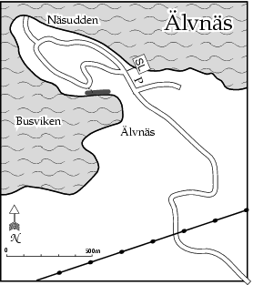

GPS: 59.28897,17.76097
"Nyupptäckt" klippa i Älvnäs på Ekerö. Klipptypen är ovanlig med en kvartsrik bergart som kan vara lite hal och inte speciellt grepprik. Klippan är ungefär 15m hög och 70m bred. Väggen går från strax under vertikalt till något överhängande. Borrbultade sportklätterturer dominerar.
Klippan ligger bara 15 m från Busviken. Sydvänd men det täta strandbuskaget gör att klippan är skuggig i nedre delen på sommaren. Den kan vara sipprig på tidig vår men är samtidigt rätt öppen för solen då.
Åk Ekerövägen förbi Ekerö centrum. Efter 1,5 km ta h i höjd med Väsby IP in på Älvnäsvägen mot just Älvnäs. Efter 2,5 km av kringelkrokar i villa- och sportstugeområden så parkerar man bortanför ändhållplatsen för buss 305. Gå sedan v upp för Talgoxevägen och följ den över krönet till en obebyggt tomt. Det är lättast att fira från toppen då terrängen runt omkring är väldigt snårig.
Från bloxc, 2008-06-09:
Från
2006-10-18
Från
Kategori:Sport
Kategori:Överhäng
Kategori:Vertikalt
Kategori:Stockholm
Kategori:Norra Stockholm
Kategori:Saknar skrivarformatering
Copyright (C) Permission is granted to copy, distribute and/or modify this document under the terms of the GNU Free Documentation License, Version 1.3